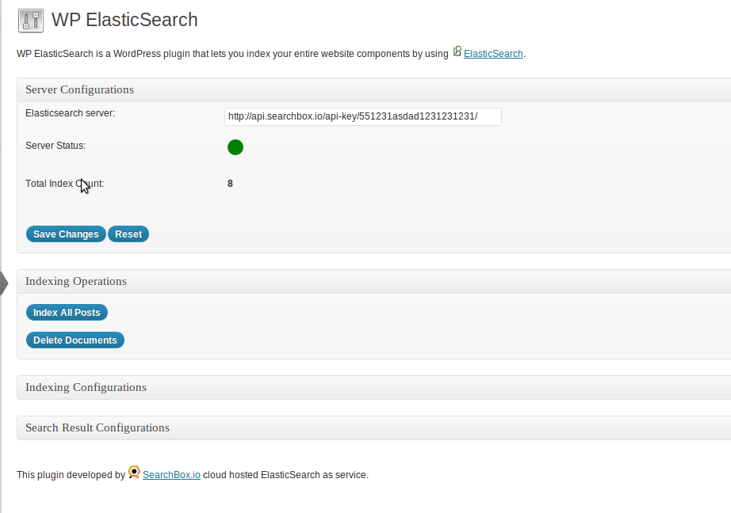
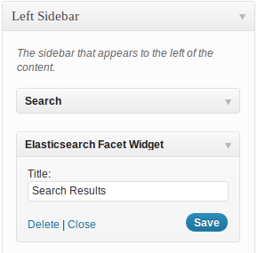
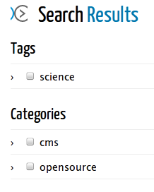

ElasticSearch WordPress Plugin.
ElasticSearch WordPress Plugin replaces the default Wordpress search with ElasticSearch. You can use any ElasticSearch server or a hosted solution such as SearchBox.io. By moving to ElasticSearch you will be able to benefit from Lucene's capabilities which provides a more relevant search experience and you will reduce the load on your SQL server by avoiding the search on the database.
Installation & Configuration
Installation is straightforward. Download zip or tar file and extract it as wp-elasticsearch to "wp-content/plugins/". Next you need to go to the Wordpress dashboard and activate the plugin.
Server Configuration
You need to set the url of your ElasticSearch server. This plugin uses Elastica under the hood, so the comminucation needs to be in HTTP. If you run ElasticSearch on your local computer with the default settings, this ourl will be "http://localhost:9200"
You can sign up for a free account at www.searchbox.io get a valid API key and configure this plugin to use SearchBox.io as well. In this case, the url will be something like: "http://api.searchbox.io/api-key/YOUR_API_KEY/"
Indexing Operations
After the initial install, you might want to sync your posts with the ElasticSearch server, for this click "Index All Posts"
You can delete all the documents from ElasticSearch by clicking "Delete Documents". This will not delete anything from your database but only delete the ElasticSearch server contents.
For all the other cases, such as posting a new article or deleting one, the plugin will aotumatically sync the operation to ElasticSearch by default, you can change this behaviour from "Indexing Configurations"
Indexing Configurations
The index name on ElasticSearch is "Wordpress" by default, but you can change this default name to anything you like
Search Result Configurations and Enabling Faceted Search
In the "Search Result Configurations" section you can configure which facets are enabled on the search results page.
To enable faceted search on the search results page, navigate to "Appereance -> Widgets", then simply drag and drop "ElasticSearch Facet Widget" to toe right, on to the Primary Widget Area.
 About
This plugin developed by @cubuzoa & SearchBox.io team.
SearchBox.io a cloud hosted "ElasticSearch as Service" provider.
Copyright and License
Copyright 2012 SearchBox.io
Licensed under the Apache License, Version 2.0 (the "License"); you may not use this work except in compliance with the License. You may obtain a copy of the License in the LICENSE file, or at:
http://www.apache.org/licenses/LICENSE-2.0
Unless required by applicable law or agreed to in writing, software distributed under the License is distributed on an "AS IS" BASIS, WITHOUT WARRANTIES OR CONDITIONS OF ANY KIND, either express or implied. See the License for the specific language governing permissions and limitations under the License.